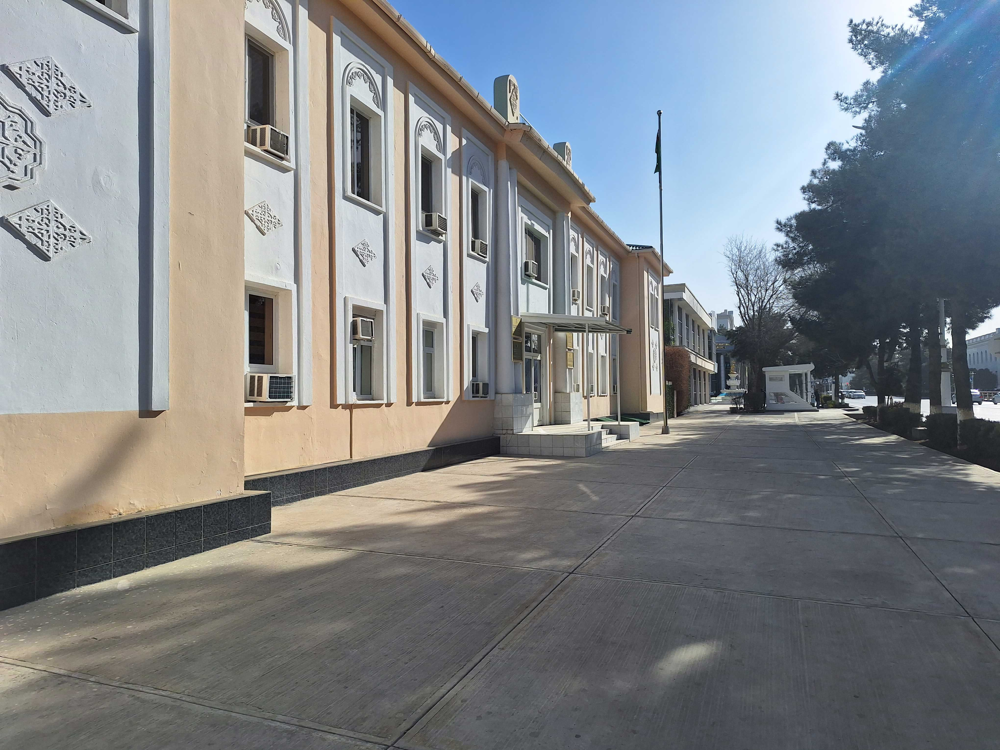
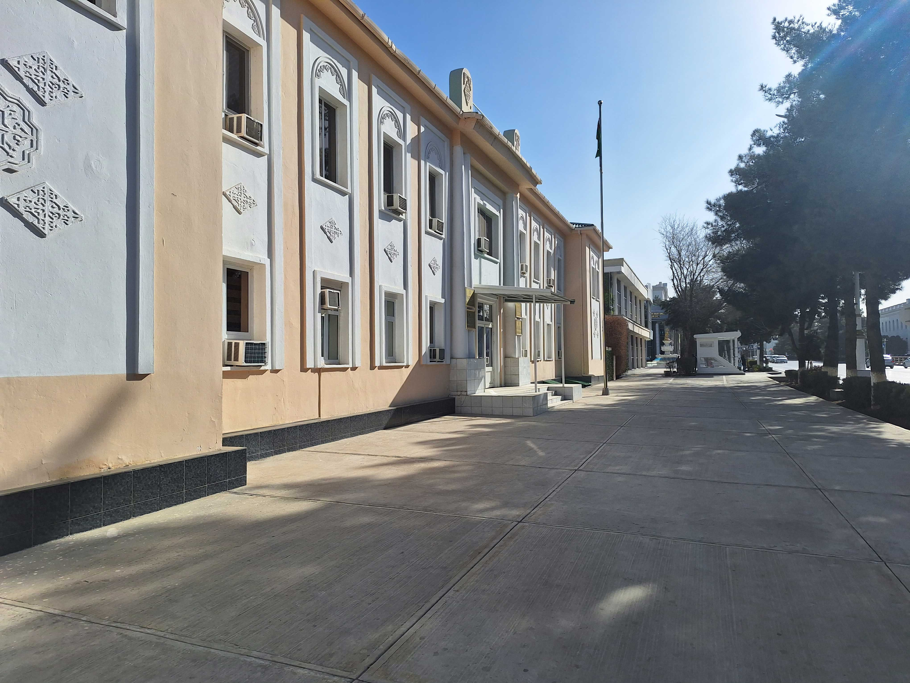

Biz barada
Türkmenistanyň Söwda we daşary ykdysady aragatnaşyklar ministrliginiň Aşgabat şäheriniň Söwda müdirligi
Aşgabat şäheriniň Söwda müdirligi hojalyk hasaplaşygyndaky özbaşdak döwlet kärhanasy bolup, doly hojalyk hasaplaşykly we öz-özüni maliýeleşdirýär.
Müdirlik şu aşakdaky işleri amala aşyrýar:
-Paýtagtymyzda döwlet derejesinde we şäher möçberinde geçirilýän köpçülikleýin baýramçylyk çärelerinde giňişleýin göçme söwdalary guraýar.
-Aşgabat şäheriniň çäginde söwda we jemgyýetçilik iýmiti nokatlarynda söwda düzgünleriniň berjaý edilmegi boýunça degişli işleri geçirýär.
-Paýtagtymyzyň ilatynyň gündelik sarp edýän harytlaryna bolan isleglerini kanagatlandyrmak maksady bilen, paýtagtymyzyň bazarlarynyň we dükanlarynyň haryt üpjünçiligini müdirlik tarapyndan öwrenip, degişli kärhanalar we guramalar bilen yzygiderli işler alynyp barylýar.
-“Söwda kärhanalarynda we hyzmatlar çygrynda harytlaryň we hyzmatlaryň bölek satuw bazar nyryhlaryna statistiki gözegçiligi geçirmek boýunça usulyýet düzgünnamasy” esasynda edara-kärhanalardan, hususy telekeçilerden harytlaryň ortaça bölek satuw bazar bahalaryny anyklamak üçin, Aşgabat şäher statistika müdirligi, Aşgabat şäheriniň Baş ykdysadyýet we ösüş müdirligi bilen bilelikde ýüz tutup gelen hatlara seredilýär.
-Şäherdäki dükandyr jemgyýetçilik iýmiti hem-de söwda we hyzmat ediş nokatlarynyň enjamlaşdyrlyşyna gözegçilik geçirýär we degişli ýüztutumalar boýunça netijenamalar berilýär.
-Aşgabat şäher häkimligi tarapyndan, şäheriň çägindäki eýeçiligiň ähli görnüşlerindäki söwda we jemgyýetçilik iýmiti nokatlary, söwda hyzmat ediş nokatlarynyň bellenen iş tertibini berjaý etmekleri boýunça resminamalary taýýarlanyp Aşgabat şäher häkimligi tarapyndan iş tertibi tassyklanyp berilýär.
-Ministrligiň 2017-nji ýylyň 22-nji iýunynda 122 belgili buýrugyna laýyklykda Aşgabat şäheri boýunça Raýat goranyşynyň Söwda we Iýmit gullugyny alyp barýar.